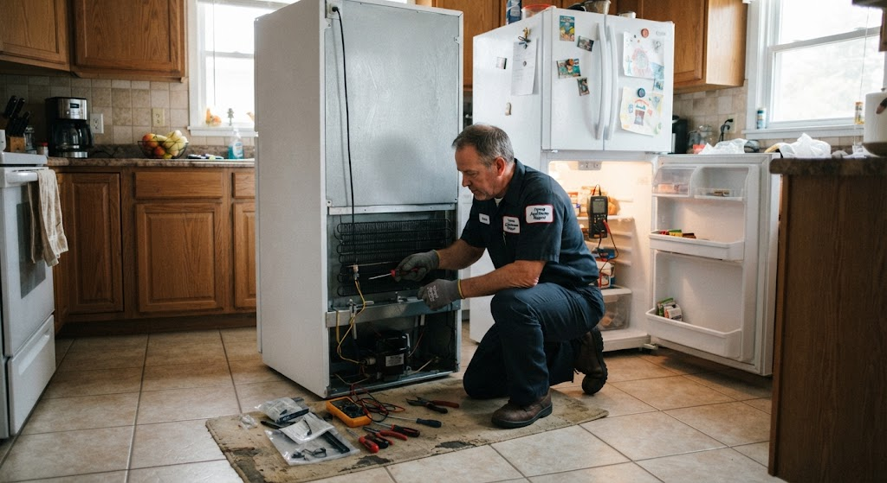
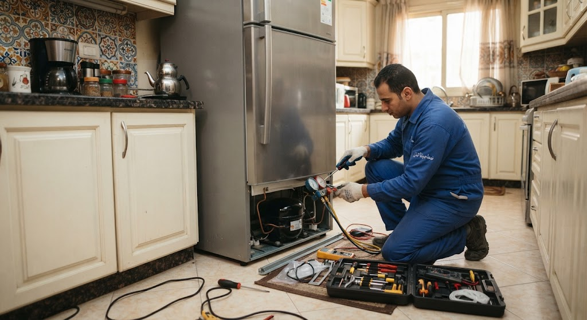

الثلاجة هي الجهاز الوحيد في البيت الذي لا يتوقف، أداة وصيفا وشتاءً، ليلاً ونهاراً. ولأنها تعمل بلا انقطاع فإنها تظهر لنا دائماً ما تفصل فجأة، بل ترسل إشارات مبكرة بجهالتها معظم الناس. أوضح هذه الإشارات تشغيل الكمبروسر بشكل دائم بلا فترات راحة، تكون طبقة ثلج على الجدار الخلفي للفريزر، ما يتجمع أسفل درج الخضار يفسد قبل موعده رغم أن الترموستات على أعلى درجة، صوت طقطقة أو أنزيز جديد، سخونة غير معتادة في جانبي الثلاجة، وارتفاع مفاجئ في فاتورة الكهرباء بلا سبب واضح.
كل واحدة من هذه العلامات تعني أن النظام يعمل خارج نطاقه التصميمي، وأنه يستهلك من عمر الكمبروسر رسمياً لا يعوض، والكمبروسر تحدداً هو أغلى قطعة في الثلاجة، ولذلك فإن التدخل المبكر في الثلاجة ليس مسألة راحة بل قرار اقتصادي يجب.
الثلاجة الصناعة في مصر تخضع لظروف لا تخضع لها نظيراتها في أوروبا. المطبخ المصري قد تصل حرارته إلى أربعين درجة، والثلاجة توضع غالباً في ركن ضيق ملتصق بالحظانة أو بجوار البوتاجاز، وتفتح عشرات المرات يومياً في بيت مزدحم. وتتحمل بكميات كبيرة من الطعام المطبوخ الساخن أحياناً، وتتعرض لانقطاعات وعودة مفاجئة للتيار الكهربائي، أضف إلى ذلك عادة تخزين اللحوم بكميات كبيرة في المواسم مثل عيد الأضحى.
هذه الظروف مجتمعة تجعل الكمبروسر يعمل بن속 تشغيل أعلى، وتحمل المكثف الخلفي يراكم عليه الغبار والأتربة بسرعة فيفقد قدرته على طرد الحرارة، ولهذا فإن أغلب ما يصل إلى فني المصرية للصيانة من بلاغات التبريد الضعيف لا يكون سببه عطل في قطعة، بل مكثفاً مسدوداً أو موقفاً سيئاً للثلاجة أو جووان باب لم يغلق بإحكام.
الثلاجة لا تصنع الهواء بل تنقل الحرارة من الداخل إلى الخارج. يقوم الكمبروسر بضغط غاز الفريون مرتفع حرارته وضغطه، ثم يمر الغاز الساخن في أنابيب المكثف خلف الثلاجة أو من جوانبها فيفقد الهواء المحيط ويتحول إلى السائل، بعدها يمر السائل عبر أنبوب شعري، ضيق حداً فينتخفض ضغطه وعند دخوله المبخر داخل الفريزر يمتص حرارة الهواء الداخلي، فتنخفض درجة حرارة الحجيرة، ثم يعود الغاز للكمبروسر لينبدأ الدورة من جديد.
الترموستات أو حساس الحرارة هو الحكم في هذه الدورة: يقيس الحرارة ويأمر الكمبروسر بالعمل أو التوقف، وفي الثلاجات نوفروست تضاف مروحة تدفع الهواء البارد من المبخر إلى حجرة التبريد، ومقاومة إذابة لتجع تعمل دورياً لمنع تراكم الجليد على المبخر، وتانيمر أو لوحة إلكترونية تدير هذه العملية.
الثلاجة التقليدية بسيطة التركيب: كمبروسر وثرموستات ومبخر ظاهر، وتحتاج تذويباً بدوئياً كل فترة. أعطالها قليلة وقطع غيارها رخيصة ومتوفرة في كل مكان، وتصلح لمن يبحث عن جهاز يدوم بأقل تكلفة صيانة. عيبها الجليد المتراكم الذي يقلل الكفاءة إذا أهمل تذويبه.
النوفروست أكثر راحة ولا تحتاج تذويباً، وتوزع البرودة بانتظام أفضل， لكنها تحتوي على منظومة إذابة كاملة من مقاومة وحساس وتايمر ومروحة، وكل واحدة من هذه القطع يمكن أن تعطل. أما الموديلات الإنفرتر الحديثة فكمبروسرها يعمل بسرعات متغيرة بدل التشغيل والإيقاف، ما يوفر كهرباء ويطيل العمر، لكنه يحتاج لوحة تحكم خاصة أغلى في الاستبدال ويتأثر بشدة بتذبذب التيار، لذلك ننصح باستخدامها بمثبت جهد دائم.

فحص الأجزاء الداخلية
إصلاح وصيانة بالمنزلالفارق بين كمبروسر أصلي وآخر مجدد أو مقلد قد يبدو مغرياً في السعر لحظة الشراء، لكنه يظهر خلال شهور في صورة ضجيج وتبريد متذبذب وعطل متكرر يجبرك على دفع تكلفة العمالة مرتين. تلتزم **المؤسسة المعتمدة** بتوريد كمبروسرات وثرموستات ومراوح ولوحات أصلية مع فاتورة موضح بها رقم القطعة، ويشمل الضمان ستة شهور كاملة على القطعة وعلى شحنة الفريون والعمل المنفذ، مع زيارة مجانية إذا تكرر نفس العرض.
غير صحيح إطلاقاً. دائرة التبريد مغلقة تماماً، والفريون لا يستهلك ولا ينقص إلا إذا كان هناك تسريب. أي فني يقترح شحناً دورياً بدون البحث عن مصدر التسريب أولاً يعالج العرض ويترك المرض.
الفرقعة الخفيفة المتقطعة ناتجة عن تمدد وانكماش البلاستيك والمعدن مع تغير الحرارة. المقلق هو الأزيز المستمر أو الطنين العالي من الكمبروسر أو صوت احتكاك المروحة.
حجرة التبريد بين ثلاث وخمس درجات مئوية، والفريزر عند سالب ثمانية عشر. في ذروة الصيف قد تحتاج لرفع درجة التبريد خطوة واحدة فقط لا أكثر، فالمبالغة تجهد الكمبروسر بلا فائدة.
يعتمد على موقع التسريب. التسريب في اللحامات أو الوصلات الظاهرة يعالَج بسهولة. أما التأكل داخل مبخر مدفون في جدار الثلاجة فقد يحتاج تركيب مبخر بديل، وعندها يققيم الفني الجدوى الاقتصادية ويصارحك بها.
عادة من ثلاث إلى خمس ساعات تشمل تفريغ الدائرة وتركيب القطعة والتفريغ بالفاكيوم ثم الشحن. ويفضل ترك الثلاجة تعمل التي عشرة ساعة قبل تحميلها بالطعام. ولحجز هذه الخدمة تحديداً يفضل الاتصال صباحا على 19580 ليكون أمام فني **المؤسسة المعتمدة** وقت كاف لإنهاء العمل في زيارة واحدة.
تواجه مشكلة في جهازك؟ اختر العطل من القائمة أدناه لمعرفة الأسباب المحتملة وطرق الإصلاح، أو اتصل بنا مباشرة على 19580
من أخطر أعطال الثلاجات لأنها تعرض الأطعمة للتلف السريع.
الأسباب المحتملة: تلف نظام إذابة الثلج (سخان الديفروست أو الثرموستات الخاص به) فيتراكم الثلج ويسد مجرى الهواء البارد - تلف مروحة الفريزر.
مشكلة شائعة في ثلاجات النوفروست تشير لخلل في نظام إذابة الثلج التلقائي.
الأسباب المحتملة: عطل في مقاومة الإذابة أو ترموستات الإذابة أو التايمر، وأحياناً جوان باب يسمح بدخول هواء رطب.
صوت مزعج يصدر من الثلاجة أثناء عملها الطبيعي أو المتقطع.
الأسباب المحتملة: مروحة المكثف أو المبخر بها جسم غريب أو محملها جاف، أو الثلاجة غير متزنة على أرجلها فيهتز الكمبروسر ملامسا الهيكل.
مياه متجمعة أسفل درج الخضروات داخل الثلاجة، أو بقعة مياه متكررة على الأرض أسفل الثلاجة أو خلفها.
الأسباب المحتملة: انسداد مصرف مياه الديفروست والأتربة فتفيض المياه داخل الثلاجة - تحرك أو شرخ طبق التبخير الموجود فوق الكمبروسر.
الثلاجة صامتة تماماً بلا أي صوت موتور ولا إضاءة الداخلية، وكأنها مفصولة عن الكهرباء.
الأسباب المحتملة: عطل في الفيشة أو مفتاح الحائط أو قاطع الكهرباء الخاص بخط المطبخ - قطع في سلك الثلاجة أو ارتخاء وصلاته الداخلية.
الخضروات والفاكهة والبيض والمشروبات داخل دولاب التبريد العادي تتجمد جزئياً أو كلياً رغم أن مؤشر الحرارة على وضع متوسط.
الأسباب المحتملة: ضبط الترموستات على درجة أبرد من اللازم دون قصد - تلف الترموستات نفسه فلا يفصل الكمبروسر في الدرجة المطلوبة.
تلاحظ أن الباب يحتاج ضغطة إضافية ليلتصق، أو ترى الجلذة مقطوعة أو مشوهة أو متصلبة في بعض المناطق.
الأسباب المحتملة: تصلب الجلذة المغنطة وفقدان مرونتها مع السنين - قطع أو تشوه في الجلدة نتيجة الشد أو تعليق أشياء على الباب.
الأسعار المذكورة تقديرية لأعطال ثلاجات وتختلف حسب الموديل ونوع قطعة الغيار، ويتم إبلاغك بالسعر النهائي بعد الفحص وقبل بدء الإصلاح.
صيانة ثلاجات لأجهزة سامسونج (Samsung) خدمة منزلية كاملة يصل فيها إليك فني متخصص مجهز بالمعدات وقطع الغيار الأصلية، ليتم الإصلاح أمامك من الزيارة الأولى في أغلب الحالات، وهي الخدمة التي نالت بها المصرية للصيانة ثقة آلاف العملاء.
فريقنا الفني منتشر في مختلف المحافظات والمناطق، لنضمن الوصول إليك أينما كنت في أسرع وقت.
التكلفة عندنا شفافة بالكامل: رسوم كشف معلنة وثابتة، وتكلفة إصلاح يتم الاتفاق عليها بعد التشخيص وقبل بدء أي عمل؛ لا توجد رسوم مخفية أو مفاجآت، وتحصل على فاتورة رسمية بكل التفاصيل مع إمكانية متابعة حالة طلبك أونلاين برقم الحجز.
قبل أي إصلاح نجري فحصاً شاملاً يشمل قياس الجهد والتيار، واختبار الحساسات ولوحة التحكم، ومراجعة التوصيلات الداخلية والعوازل؛ هذا التشخيص الدقيق يضمن معالجة السبب الجذري للعطل وليس أعراضه الظاهرة فقط، فلا يتكرر العطل بعد أيام من الإصلاح.
خدمتنا متاحة طوال أيام الأسبوع من 9 صباحاً حتى 10 مساءً. اتصل الآن على 19580 واحصل على خدمة صيانة فورية ومضمونة.
صيانة ثلاجات لأجهزة توشيبا (Toshiba) بمعايير احترافية: كشف دقيق بأجهزة قياس حديثة، قطع غيار أصلية مناسبة لكل موديل، وفني مدرب يشرح لك سبب العطل قبل أي إصلاح — هذا ما يحصل عليه عملاء المصرية للصيانة في كل زيارة.
نلتزم بتقديم تقرير فني مفصل عن حالة الجهاز والأجزاء التي تحتاج إصلاحاً أو استبدالاً، مع فاتورة رسمية وضمان مكتوب على كل عملية صيانة.
التكلفة عندنا شفافة بالكامل: رسوم كشف معلنة وثابتة، وتكلفة إصلاح يتم الاتفاق عليها بعد التشخيص وقبل بدء أي عمل؛ لا توجد رسوم مخفية أو مفاجآت، وتحصل على فاتورة رسمية بكل التفاصيل مع إمكانية متابعة حالة طلبك أونلاين برقم الحجز.
تشمل خدمتنا جميع أنواع أعطال ثلاجات دون استثناء: الأعطال الكهربائية مثل مشاكل التوصيلات واللوحات الإلكترونية والحساسات، والأعطال الميكانيكية مثل المحركات والمضخات والصمامات، بالإضافة إلى أعمال الصيانة الدورية التي تطل عمر الجهاز وتخفض استهلاك الكهرباء بشكل ملحوظ.
كل إصلاح مشمول بضمان شامل على العمل والقطع، وأسعارنا عادلة ومعلنة بدون زيادات. اطلب فنياً الآن على 19580.
صيانة ثلاجات لأجهزة أريستون (Ariston) خدمة منزلية كاملة يصل فيها إليك فني متخصص مجهز بالمعدات وقطع الغيار الأصلية، ليتم الإصلاح أمامك من الزيارة الأولى في أغلب الحالات، وهي الخدمة التي نالت بها المصرية للصيانة ثقة آلاف العملاء.
يستخدم فنيونا أحدث أجهزة القياس والتشخيص الإلكتروني لتحديد الأعطال بدقة متناهية، مما يوفر عليك الوقت والمال ويضمن إصلاحاً صحيحاً من المرة الأولى.
فريق خدمة العملاء متاحة يومياً من 9 صباحاً حتى 11 مساءً للرد على استفساراتك وتحديد المواعيد بمرونة، مع إمكانية الحجز عبر الهاتف أو الواتساب أو نموذج الحجز الإلكتروني في الموقع خلال أقل من دقيقة واحدة.
التكلفة عندنا شفافة بالكامل: رسوم كشف معلنة وثابتة، وتكلفة إصلاح يتم الاتفاق عليها بعد التشخيص وقبل بدء أي عمل؛ لا توجد رسوم مخفية أو مفاجآت، وتحصل على فاتورة رسمية بكل التفاصيل مع إمكانية متابعة حالة طلبك أونلاين برقم الحجز.
نمنح ضماناً حقيقياً على الإصلاح وقطع الغيار المستبدلة يصل إلى 6 شهور كاملة. للحجز اتصل بالخط الساخن 19580 أو تواصل عبر واتساب.
عندما يتعطل جهازك فجأة فأنت تحتاج صيانة ثلاجات لأجهزة كريازي (Kiriazi) من جهة موثوقة تصلك بسرعة؛ لهذا يعتمد آلاف العملاء على الفنيين المعتمدين لدى المصرية للصيانة في إصلاح أعطالهم داخل المنزل دون نقل الجهاز.
لدينا خبرة تراكمية واسعة في إصلاح جميع أعطال ثلاجات مهما كانت بسيطة أو معقدة، بما في ذلك الأعطال الإلكترونية والميكانيكية.
قبل أي إصلاح نجري فحصاً شاملاً يشمل قياس الجهد والتيار، واختبار الحساسات ولوحة التحكم، ومراجعة التوصيلات الداخلية والعوازل؛ هذا التشخيص الدقيق يضمن معالجة السبب الجذري للعطل وليس أعراضه الظاهرة فقط، فلا يتكرر العطل بعد أيام من الإصلاح.
فريق خدمة العملاء متاحة يومياً من 9 صباحاً حتى 11 مساءً للرد على استفساراتك وتحديد المواعيد بمرونة، مع إمكانية الحجز عبر الهاتف أو الواتساب أو نموذج الحجز الإلكتروني في الموقع خلال أقل من دقيقة واحدة.
لا تتردد في التواصل معنا على 19580 للحصول على استشارة فنية مجانية وحجز موعد الصيانة في الوقت الذي يناسبك.
صيانة ثلاجات لأجهزة زانوسي (Zanussi) لم تعد مهمة صعوبة أو مكلفة؛ فبفضل شبكة فنين تغطي جميع المناطق وخبرة تتجاوز 15 عاماً، توفر لك المصرية للصيانة إصلاحاً سريعاً برقطع أصلية وأسعار عادلة معلنة.
نلتزم بتقديم تقرير فني مفصل عن حالة الجهاز والأجزاء التي تحتاج إصلاحاً أو استبدالاً، مع فاتورة رسمية وضمان مكتوب على كل عملية صيانة.
تشمل خدمتنا جميع أنواع أعطال ثلاجات دون استثناء: الأعطال الكهربائية مثل مشاكل التوصيلات واللوحات الإلكترونية والحساسات، والأعطال الميكانيكية مثل المحركات والمضخات والصمامات، بالإضافة إلى أعمال الصيانة الدورية التي تطل عمر الجهاز وتخفض استهلاك الكهرباء بشكل ملحوظ.
التكلفة عندنا شفافة بالكامل: رسوم كشف معلنة وثابتة، وتكلفة إصلاح يتم الاتفاق عليها بعد التشخيص وقبل بدء أي عمل؛ لا توجد رسوم مخفية أو مفاجآت، وتحصل على فاتورة رسمية بكل التفاصيل مع إمكانية متابعة حالة طلبك أونلاين برقم الحجز.
كل إصلاح مشمول بضمان شامل على العمل والقطع، وأسعارنا عادلة ومعلنة بدون زيادات. اطلب فنياً الآن على 19580.
صيانة ثلاجات لأجهزة هيتاشي (Hitachi) خدمة منزلية كاملة يصل فيها إليك فني متخصص مجهز بالمعدات وقطع الغيار الأصلية، ليتم الإصلاح أمامك من الزيارة الأولى في أغلب الحالات، وهي الخدمة التي نالت بها المصرية للصيانة ثقة آلاف العملاء.
لدينا خبرة تراكمية واسعة في إصلاح جميع أعطال ثلاجات مهما كانت بسيطة أو معقدة، بما في ذلك الأعطال الإلكترونية والميكانيكية.
تشمل خدمتنا جميع أنواع أعطال ثلاجات دون استثناء: الأعطال الكهربائية مثل مشاكل التوصيلات واللوحات الإلكترونية والحساسات، والأعطال الميكانيكية مثل المحركات والمضخات والصمامات، بالإضافة إلى أعمال الصيانة الدورية التي تطل عمر الجهاز وتخفض استهلاك الكهرباء بشكل ملحوظ.
قبل أي إصلاح نجري فحصاً شاملاً يشمل قياس الجهد والتيار، واختبار الحساسات ولوحة التحكم، ومراجعة التوصيلات الداخلية والعوازل؛ هذا التشخيص الدقيق يضمن معالجة السبب الجذري للعطل وليس أعراضه الظاهرة فقط، فلا يتكرر العطل بعد أيام من الإصلاح.
كل إصلاح مشمول بضمان شامل على العمل والقطع، وأسعارنا عادلة ومعلنة بدون زيادات. اطلب فنياً الآن على 19580.
صيانة ثلاجات لأجهزة يونيون إير (Unionaire) خدمة منزلية كاملة يصل فيها إليك فني متخصص مجهز بالمعدات وقطع الغيار الأصلية، ليتم الإصلاح أمامك من الزيارة الأولى في أغلب الحالات، وهي الخدمة التي نالت بها المصرية للصيانة ثقة آلاف العملاء.
يستخدم فنيونا أحدث أجهزة القياس والتشخيص الإلكتروني لتحديد الأعطال بدقة متناهية، مما يوفر عليك الوقت والمال ويضمن إصلاحاً صحيحاً من المرة الأولى.
قبل أي إصلاح نجري فحصاً شاملاً يشمل قياس الجهد والتيار، واختبار الحساسات ولوحة التحكم، ومراجعة التوصيلات الداخلية والعوازل؛ هذا التشخيص الدقيق يضمن معالجة السبب الجذري للعطل وليس أعراضه الظاهرة فقط، فلا يتكرر العطل بعد أيام من الإصلاح.
التكلفة عندنا شفافة بالكامل: رسوم كشف معلنة وثابتة، وتكلفة إصلاح يتم الاتفاق عليها بعد التشخيص وقبل بدء أي عمل؛ لا توجد رسوم مخفية أو مفاجآت، وتحصل على فاتورة رسمية بكل التفاصيل مع إمكانية متابعة حالة طلبك أونلاين برقم الحجز.
خدمتنا متاحة طوال أيام الأسبوع من 9 صباحاً حتى 10 مساءً. اتصل الآن على 19580 واحصل على خدمة صيانة فورية ومضمونة.
صيانة ثلاجات لأجهزة وايت ويل (White Whale) في نفس اليوم وبضمان مكتوب يصل إلى 6 شهور — خدمة منزلية متكاملة يقدمها فريق مدرب على أحدث الموديلات والأنظمة الإلكترونية لدى المصرية للصيانة.
يستخدم فنيونا أحدث أجهزة القياس والتشخيص الإلكتروني لتحديد الأعطال بدقة متناهية، مما يوفر عليك الوقت والمال ويضمن إصلاحاً صحيحاً من المرة الأولى.
نحتفظ بمخزون واسع من قطع الغيار الأصلية والمتوافقة للأجهزة وايت ويل، ما يعني أن أغلب الإصلاحات تكتمل في زيارة واحدة دون انتظار توفير قطع من الخارج، وكل قطعة يتم تركيبها مشمولة بضمان مستقل إلى جانب ضمان الخدمة نفسها.
فريق خدمة العملاء متاحة يومياً من 9 صباحاً حتى 11 مساءً للرد على استفساراتك وتحديد المواعيد بمرونة، مع إمكانية الحجز عبر الهاتف أو الواتساب أو نموذج الحجز الإلكتروني في الموقع خلال أقل من دقيقة واحدة.
لا تتردد في التواصل معنا على 19580 للحصول على استشارة فنية مجانية وحجز موعد الصيانة في الوقت الذي يناسبك.
نغطي محافظات الدلتا بالكامل. اختر محافظتك أو مدينتك.
سواء بتقول صيانة ثلاجات أو بأي صيغة تانية، الخدمة واحدة والرقم واحد: 01289966660
كل فني مدرب على أعطال ثلاجات تحديداً، وليس فنياً عاماً لكل شيء.
نستخدم قطع غيار أصلية أو معتمدة من الوكيل، ونعرض القطعة القديمة قبل الاستبدال.
ضمان مكتوب على المصنعية وقطع الغيار، وإعادة الزيارة مجاناً لو تكرر نفس العطل.
نود التوضيح الكامـل لعملائنا الكرام أن مؤسسة المعتمد جروب هي مركز خدمة وصيانة معتمد خارجي للأجهزة المنزلية، ولسنا الشركة الرئيسية أو الوكيل الحصري المصنّع للعلامات التجارية المختلفة؛ نحن نقدم خدمات الصيانة الفورية، الإصلاح، وتوفير قطع الغيار الأصلية بكفاءة عالية وبخبرة فنية متخصصة لراحة عملائنا.
في مؤسسة المعتمد جروب، نُدرك تماماً أهمية خصوصيتك ونلتزم التزاماً كاملاً بحماية بياناتك الشخصية بكل أمان وشفافية تامة أثناء طلبك لخدمات الصيانة المنزلية.
جميع البيانات التي تقدمها لنا (مثل: الاسم، رقم الهاتف، والعنوان التفصيلي) تُستخدم حصرياً لتنفيذ طلب الصيانة وتوجيه الفريق الفني المعتمد لمنزلك في أسرع وقت، ولا يتم مشاركتها أبداً مع أي طرف ثالث.
نستخدم أحدث تقنيات التشفير الرقمي وبروتوكولات الأمان لضمان حماية وسائط الاتصال بين جهازك وموقعنا، مما يمنع أي محاولات لاعتراض أو استطلاع بياناتك أثناء التصفح أو إرسال طلبات الصيانة.
تستعين منصة المعتمد جروب بملفات تعريف الارتباط البسيطة لتحسين تجربتك في تصفح الموقع، تذكر تفضيلاتك، وتقديم محتوى ملائم وسريع يلبي احتياجاتك الفنية فوراً.
قد نستخدم رقم هاتفك للتواصل معك فقط بشأن حالة طلب الصيانة الخاص بك، أو إرسال تفاصيل الفاتورة والضمان المعتمد، مع الاحتفاظ بحقك الكامل في طلب مراجعة، تعديل، أو حذف بياناتك في أي وقت.